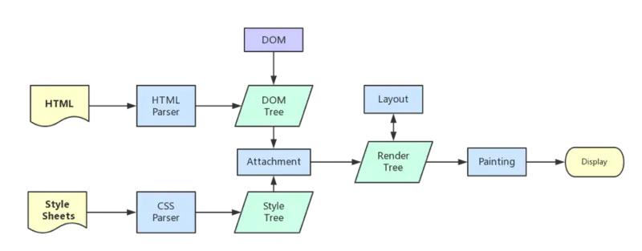

重排(reflow)和重绘(repaint)
页面生成的过程：
1.HTML 被 HTML 解析器解析成 DOM 树；
2.CSS 被 CSS 解析器解析成 CSSOM 树；
3.结合 DOM 树和 CSSOM 树，生成一棵渲染树(Render Tree)，这一过程称为 Attachment；
4.生成布局(flow)，浏览器在屏幕上“画”出渲染树中的所有节点；
5.将布局绘制(paint)在屏幕上，显示出整个页面。
第四步和第五步是最耗时的部分，这两步合起来，就是我们通常所说的渲染。

渲染：
在页面的生命周期中，网页生成的时候，至少会渲染一次。在用户访问的过程中，还会不断触发重排(reflow)和重绘(repaint)，不管页面发生了重绘还是重排，都会影响性能，最可怕的是重排，会使我们付出高额的性能代价，所以我们应尽量避免。
重排比重绘大：
大，在这个语境里的意思是：谁能影响谁？
- 重绘：某些元素的外观被改变，例如：元素的填充颜色
- 重排：重新生成布局，重新排列元素。
就如上面的概念一样，单单改变元素的外观，肯定不会引起网页重新生成布局，但当浏览器完成重排之后，将会重新绘制受到此次重排影响的部分。比如改变元素高度，这个元素乃至周边dom都需要重新绘制。
也就是说：重绘不一定导致重排，但重排一定会导致重绘。